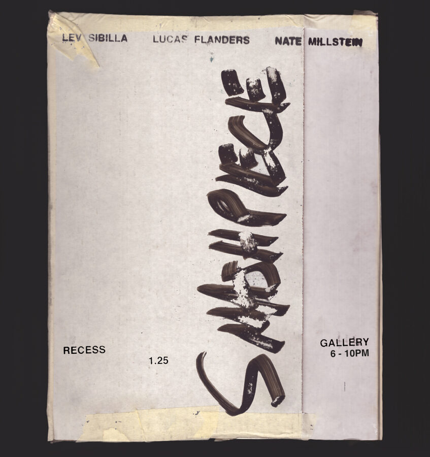

Smashpiece
Opening Next Sunday 1.25.25 ‘Smashpiece’ curated by Nick D’Alessandro
Featuring work by
Lev Sibilla @levsibilla (PORTLAND, OREGON)
Lucas Flanders @ls_rn_fs (CHICAGO, ILLINOIS)
Nate Millstein @natemillstein (NEW YORK CITY, NY)
6 – 10pm recess gallery @ Schoolhouse
2247 N. Maplewood Ave.
Chicago, IL 60647